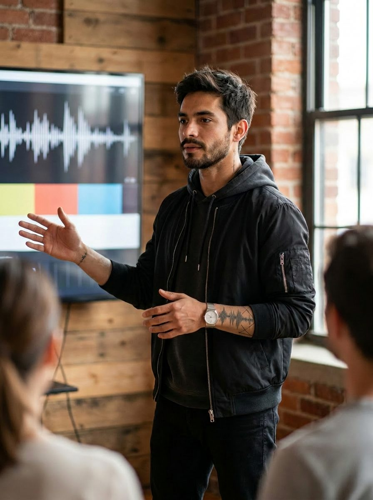

AI-Powered Creative Jordan Rivera
Jordan Rivera
Head of SoundCraft Studios at Donarus
To bring Jordan Rivera to life, I used a suite of AI and creative tools to build a fully realized, cross-platform persona.
The project employed OpenArt.ai for character modeling, Hailou.ai for personality development, ChatGPT for content, Photoshop for compositing, Premiere Pro for video editing, and Sintra.ai for publishing workflows.
Character Origin
Jordan Rivera was born from a need: to personify the future of AI-powered creativity. The character was developed to embody both the creator's vision and target demographic, someone comfortable in both studios and creative street-level spaces.
Creative Tools
Tools shaped his tone, part strategist, part mentor, with a voice designed to inspire without preaching. Midjourney and ChatGPT supported campaign templates while visual identity remained cohesive across iterations.
Visual Output
Assets were optimized for TikTok explainers, LinkedIn case studies, and Instagram carousel posts. The collection features Jordan in creative sessions, production workflows, and collaborative scenarios with fictional artists.
Workflow Process
Development followed a strict pipeline beginning with character discovery, moving through iterative prompt refinement, then building blog content, explainers, and tutorials on sound branding.

Strengths and Flaws
Jordan's strength lies in how believable and consistent he feels across visuals and voice. Early iterations showed issues with environments that leaned too sterile or corporate, restricted apparel.
Visual First
The breakthrough came when I started with images. This approach allowed visual mood to drive caption and blog development, reducing decision fatigue.
Strategic Impact
Jordan Rivera represents more than a character, he's a bridge between creative workflows and AI integration. The persona demonstrates feasibility for teams wanting scalable output without sacrificing quality.
AI Voice Branding: How SoundCraft Studios Turns Voice into Brand Identity
There's something primal about sound. Long before we ever watched a screen, we were listening.
In 2026, sound is no longer an afterthought. It's the front line of brand identity.
The studio asks "What should your brand sound like?" then generates tonal direction through natural language prompts, trains voice models, and builds layered sound identity systems.
A fintech startup increased listen-through rates jumped 31 percent after implementing unified AI voice branding across platforms.
The magic isn't in who the voice belongs to. It's in how well it fits the identity you're building.
Take a blog post you love, turn it into a short podcast using AI narration, and give it a branded music bed.
Character Profile
Name: Jordan Rivera
Title: Head of SoundCraft Studios
Age: 38
Location: Encino, CA
Background: Former brand strategist and sound designer bringing cinematic flair and emotional depth to every project.
Voice Style: Passionate, textured, and cinematic using audio metaphors and narrative rhythm
Core Topics: Sonic branding, AI-generated voice design, branded podcast scripting, audio-first storytelling
Target Audience: Content teams, brands seeking audio identity, agencies building immersive experiences
Monetization Goals: Sell podcast packages, offer AI audio consulting, license soundtracks and stingers
Want this kind of work on your brand?
If your brand should be working harder than it is, this is where it starts. One direct conversation.